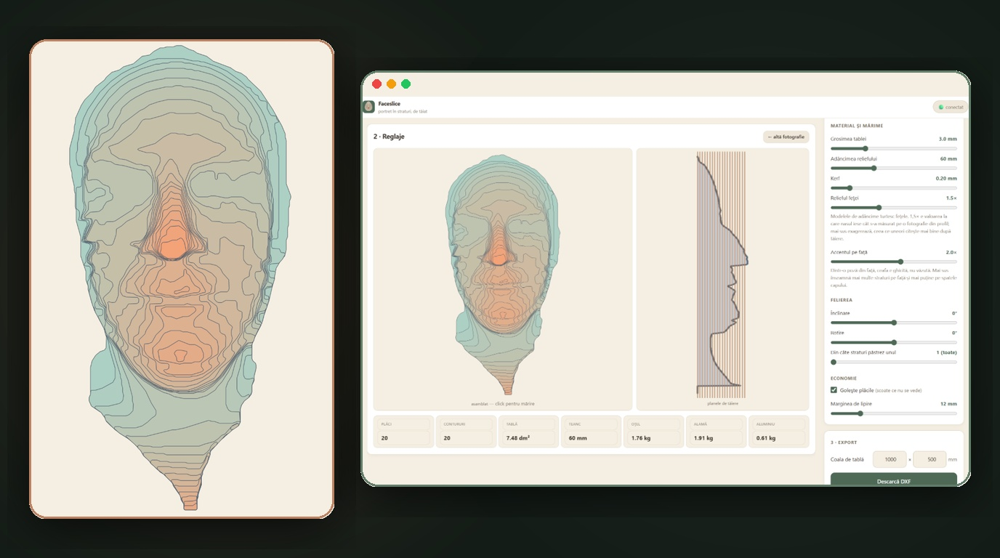
Ferramentas criativas
Faceslice
Uma foto vira um relevo 3D, dividido em camadas para criar um retrato metálico.
Transforme uma fotografia em arte em metal e, em seguida, trabalhe nas conexões e verificações de corte que ajudam a mantê-la unida.
Comece com um convite único ou um link de um dispositivo de espaço de trabalho autorizado. Projetos armazenados em cache podem ser editados offline; processamento fotográfico e projetos somente de servidor precisam de conexão.
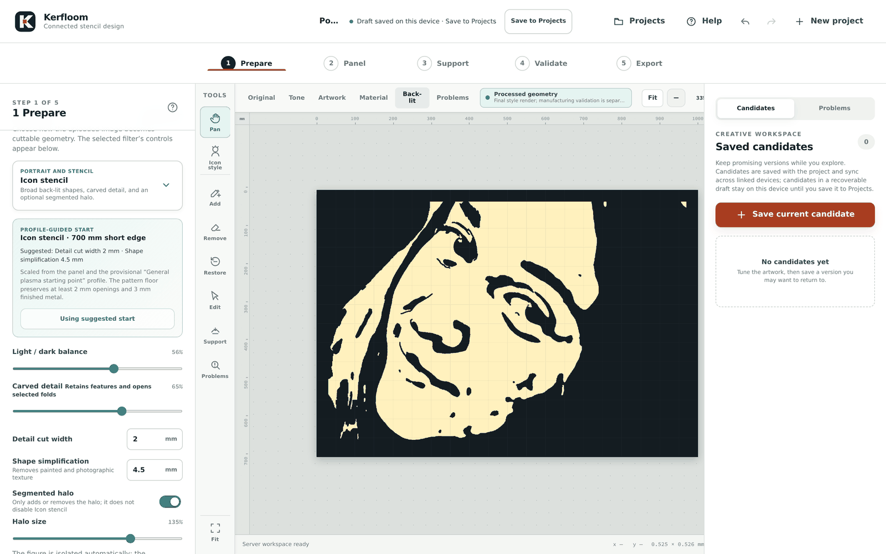
Arte que permanece inteira.
O Kerfspan se chamava Kerfloom até outubro de 2026. Agora ele fica em kerfspan.com, e o endereço antigo kerfloom.zandaulion.com continua funcionando durante a transição. Algumas capturas ainda mostram o nome antigo.
Kerfspan transforma fotografias e obras de arte preparadas em designs conectados para corte a plasma CNC. Ele traz tratamentos de imagem, layout de painel, suporte, edições manuais, simulação de corte, um espaço de trabalho de projeto criptografado e exportação de vetor em um aplicativo da web instalável.
As áreas escuras representam metal a ser guardado; as áreas claras representam o material a ser removido. A arte, a moldura, os suportes, as edições de pincel e os reparos de fabricação permanecem separados, para que você possa revisar uma decisão sem começar de novo.
Uma prévia bonita é apenas o começo. Kerfspan verifica a geometria em relação a um perfil de corte escolhido, enquanto o operador confirma as configurações do material e da máquina reais. Os perfis permanecem marcados como Provisórios até que as evidências de verificação sejam registradas.
Exemplos de tratamentos visuais disponíveis em Kerfspan. Cada projeto ainda precisa de seu próprio painel, suporte e verificações de perfil de corte antes da exportação.
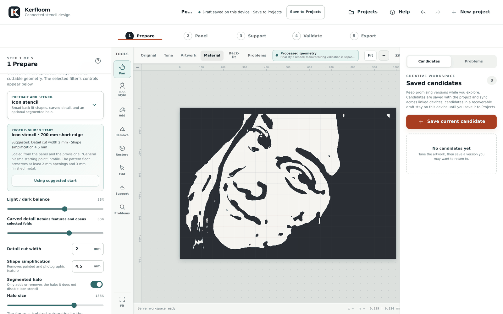
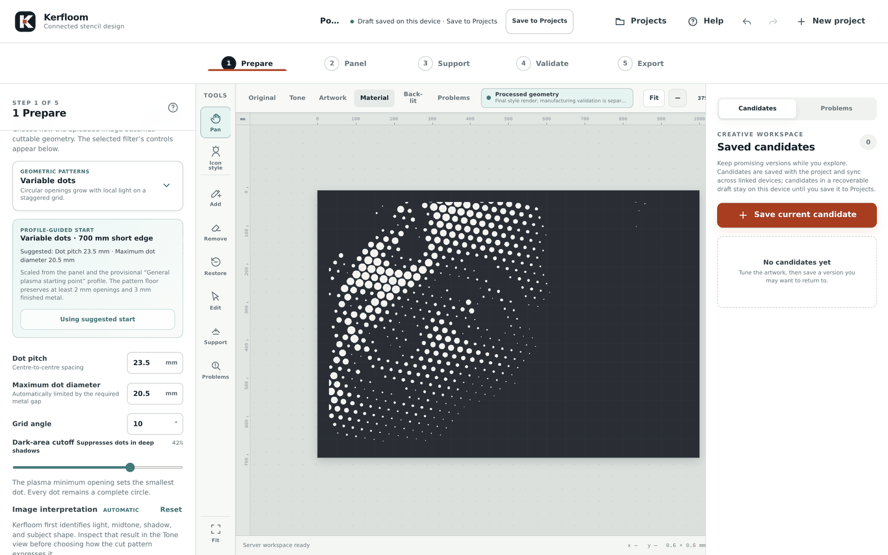
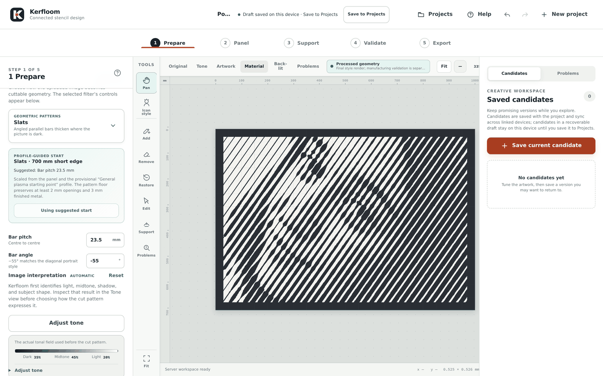
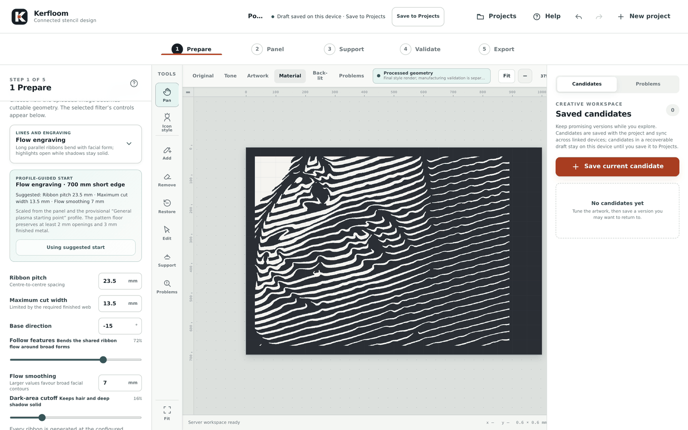
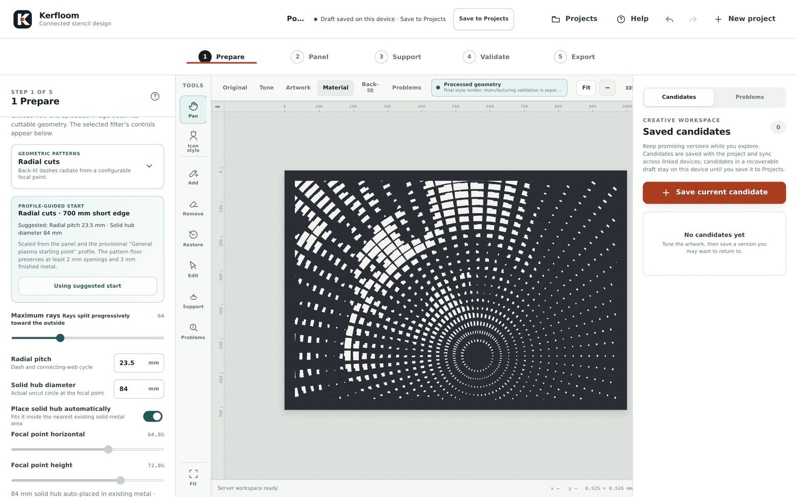
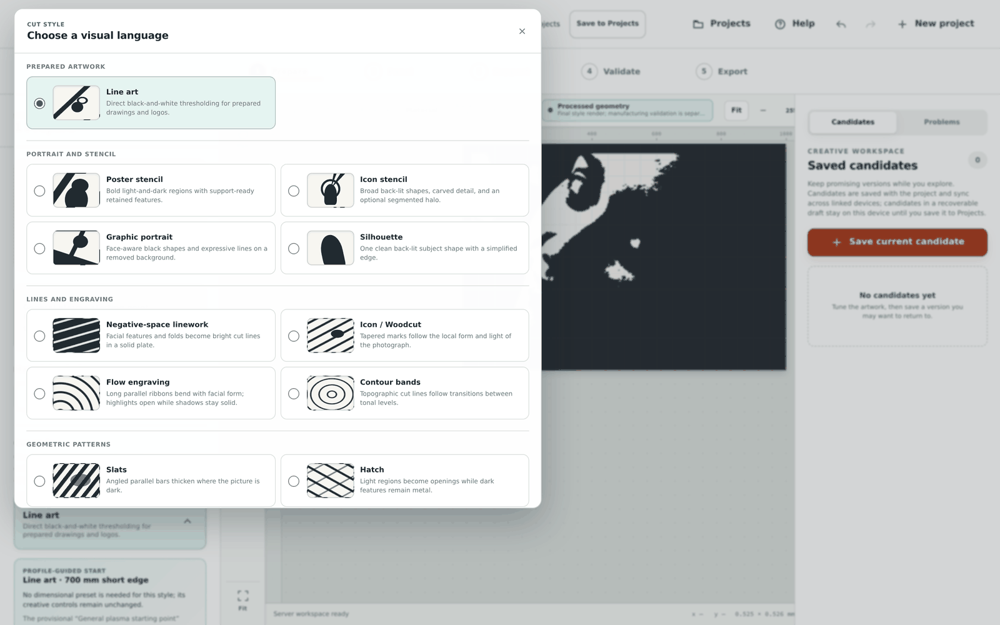
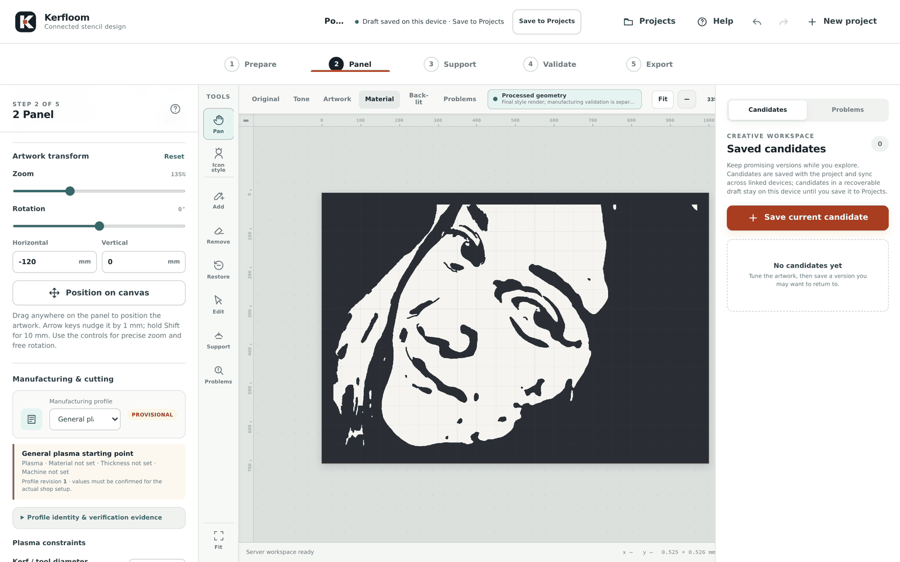
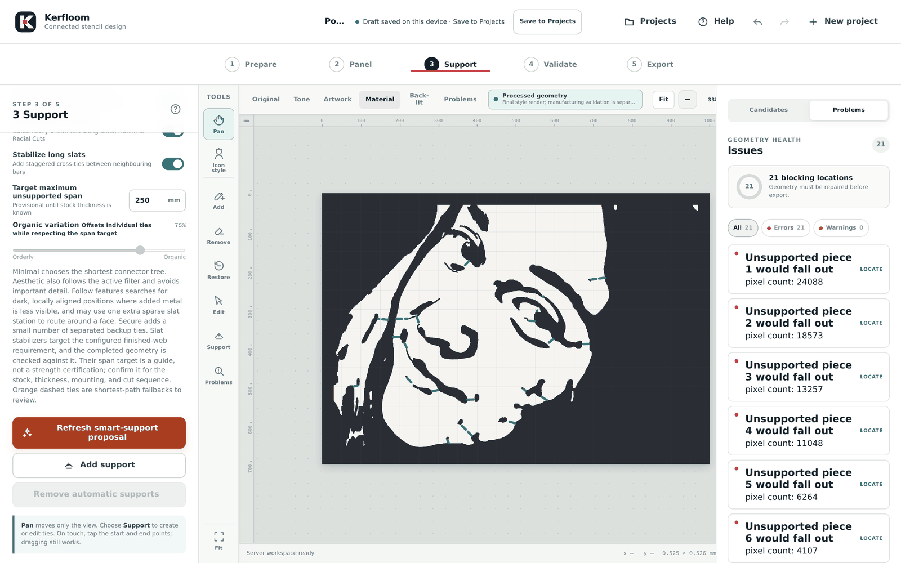
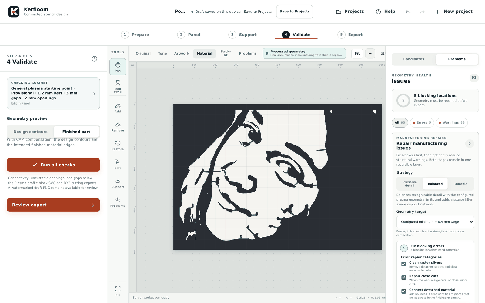
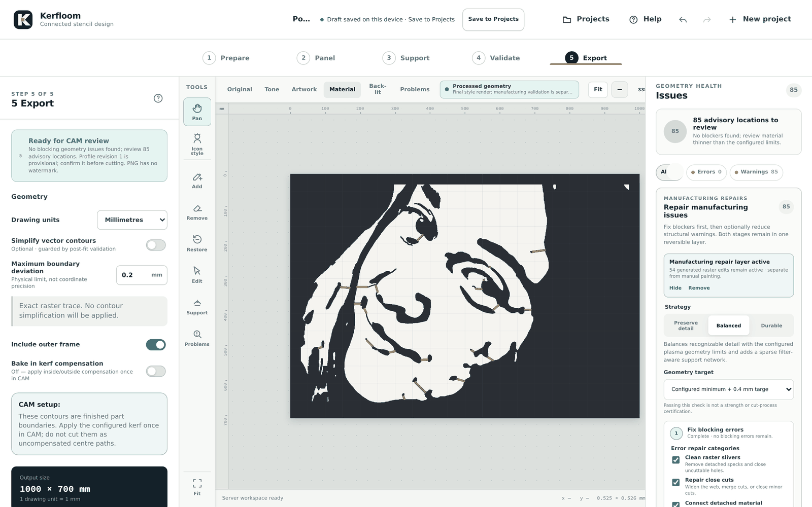
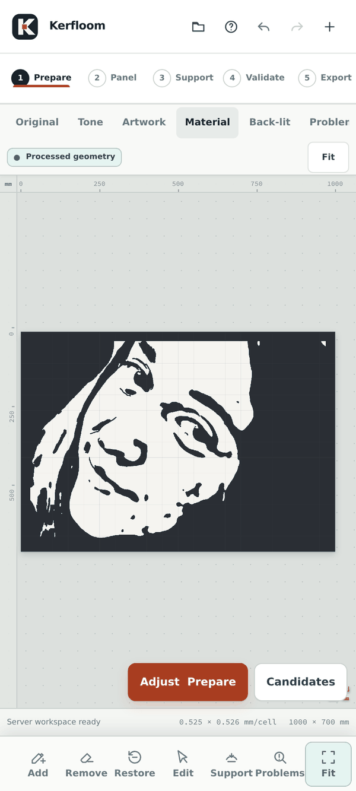
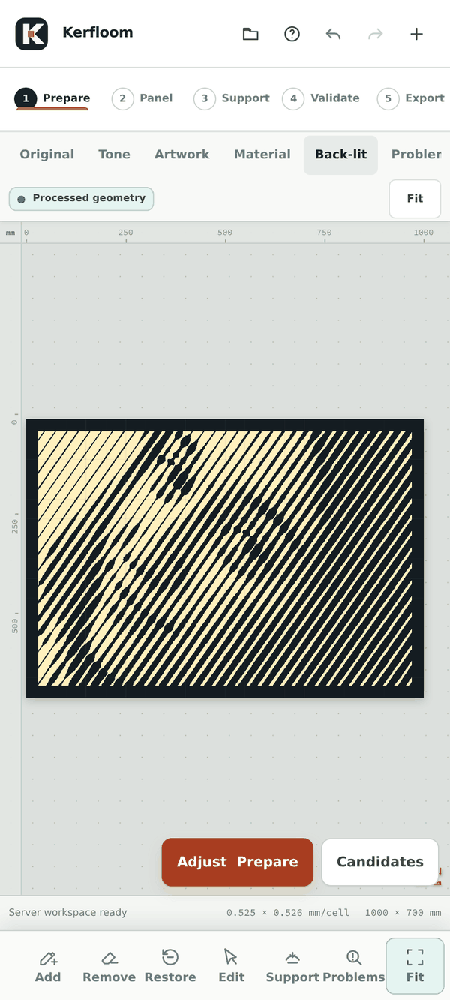
Os 14 estilos abrangem arte linear, estêncil de pôster, estêncil de ícone, retrato gráfico, silhueta, linhas de espaço negativo, ícone / xilogravura, gravação de fluxo, faixas de contorno, ripas, hachura, cortes radiais, pontos variáveis e simetria ornamental. Amostras visuais e breves descrições ajudam você a escolher um ponto de partida.
Um perfil de corte versionado registra o processo, estoque, máquina ou consumível, limites de geometria, suposições de suporte e evidências de verificação. Os projetos e as exportações retidas mantêm seu próprio instantâneo, de modo que as configurações por trás de um resultado permanecem identificáveis.
A simulação de Kerf e as visualizações de reparo testam os limites de geometria configurados. Os relatórios de reparo explicam o que mudou, a incerteza restante, por que uma tentativa foi interrompida e o que tentar em seguida. Validação, reparos e planejamento de suporte inteligente mostram progresso e podem ser cancelados enquanto a última geometria aceita permanece utilizável.
Os reparos aceitos permanecem ativos durante as correções manuais de material e suporte. Uma área pintada substitui apenas uma edição oposta gerada nessa área. Run all checks quando estiver pronto para a próxima validação completa; alterar a arte subjacente, a geometria do painel ou os limites de corte torna os reparos dependentes obsoletos e exigem regeneração.
As exportações retidas incluem um manifesto de liberação inviolável com geometria e hashes de saída, unidades, configurações de perfil, contrato de compensação e evidências de validação. A simplificação vetorial opcional é aceita somente quando as verificações de topologia e fabricação são aprovadas; caso contrário, a exportação retornará aos contornos raster exatos.
Pronto para revisão do CAM significa que a geometria atual passou nas verificações configuradas do Kerfspan. O operador ainda verifica o material, a máquina, os consumíveis, a compensação, as entradas, a ordem de corte, a fixação, o comportamento térmico e o uso final. Novos projetos exportam os limites pretendidos da peça acabada, com compensação de corte interno/externo aplicada exatamente uma vez em CAM.
O perfil de plasma geral começa com uma abertura mínima de 2 mm e uma folga/rede acabada conservadora de 3 mm. Os limites inferiores necessitam de confirmação para o material e máquina selecionados. Os perfis permanecem provisórios até que as provas de verificação sejam registadas.
.stencil.json downloads omitem a fotografia original. O espaço de trabalho criptografado e os pacotes de compartilhamento podem incluí-lo quando disponível, juntamente com edições, suporte, reparos, pontos de recuperação e exportações retidas.No Windows, use o ícone de instalação ou o menu Aplicativos/Instalar no Edge ou Chrome. No Android, escolha Instalar aplicativo ou Adicionar à tela inicial no Chrome. No iPhone ou iPad, abra o aplicativo no Safari e escolha Compartilhar e Adicionar à tela inicial.
Carregue o aplicativo em um dispositivo autorizado enquanto estiver on-line e abra um projeto somente de servidor ou escolha Save offline antes de desconectar. Os projetos armazenados em cache permanecem editáveis e mudam de fila até que a sincronização seja bem-sucedida; o processamento fotográfico ainda precisa de uma conexão. Após uma atualização do aplicativo, abra a cópia instalada online para que possa ser atualizada.
No celular, a tela permanece visível enquanto os controles do palco abrem em folhas inferiores compactas. Um trilho de ferramentas persistente mantém projetos, estado de sincronização, Undo/Redo e ferramentas de edição acessíveis. As réguas mantêm as unidades físicas conforme você aumenta o zoom, com um indicador de escala vermelha visível sobre o metal e as aberturas. Os suportes têm alternativas de teclado, lista, numéricas e baseadas em toque, e o modo Pan mantém a navegação separada da edição.
A interface inclui foco visível, navegação por teclado para guias de fluxo de trabalho e avisos de leitor de tela. As verificações de aceitação de dispositivos físicos e de tecnologia assistiva continuam em andamento.
Selecione Help no aplicativo para obter seu manual pesquisável ou abra o botão de ponto de interrogação de um estágio no capítulo relevante. Você também pode leia o guia do usuário em GitHub.
O Kerfspan é open source, e um início rápido com Compose sobe os dois serviços com Docker ou Podman. Ele precisa de cerca de 3 GB de disco para as duas imagens, que são geradas para x86-64 e ARM64. Defina um token de administrador e uma chave de criptografia dos projetos, inicie os contêineres e crie um convite de uso único para o seu primeiro navegador. Guarde um backup da chave de criptografia: sem ela, os projetos não podem ser descriptografados.
O Kerfspan precisa de uma conexão segura: HTTPS, ou localhost na máquina que o executa. Para usá-lo em outros dispositivos, coloque-o atrás de um proxy reverso que cuide do TLS, como Caddy ou Tailscale. Por HTTP simples, a página de login explica por que não pode continuar.
O navegador lida com conversão de arte de linha, geometria determinística, edição e cache offline. Um serviço Node/Express gerencia o acesso a dispositivos baseado em convite e espaços de trabalho criptografados; um serviço Python/FastAPI privado usa OpenCV e MediaPipe para análise fotográfica e renderização de estilo. O aplicativo está licenciado sob GPL-3.0-or-later.
O Kerfspan começou como stencil-cnc, nome que continua em identificadores internos dos quais dependem as instalações existentes e os arquivos salvos.
Para obter a lista de recursos atual e a documentação técnica, consulte o LEIA-ME Kerfspan.